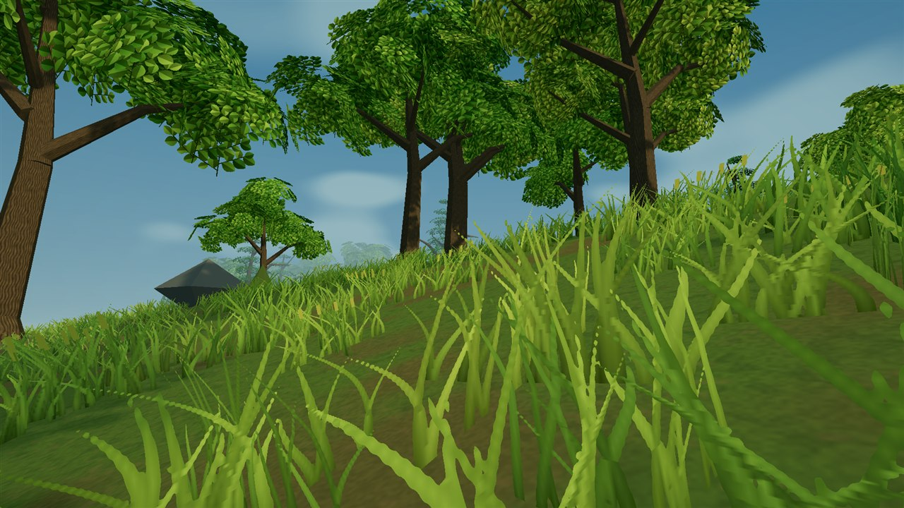

03 / GROUND COVER
A closer look
A low-angle study of curved grass sprays, ground textures, and the tree silhouettes beyond.

03 / GROUND COVER
A low-angle study of curved grass sprays, ground textures, and the tree silhouettes beyond.
